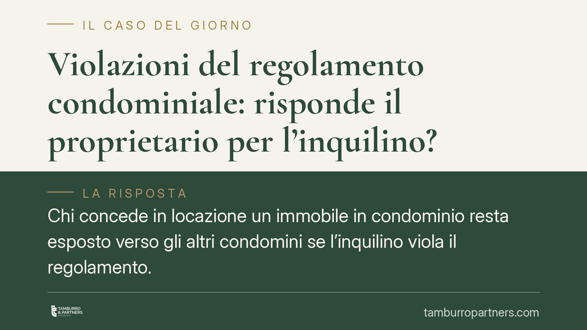

Violazioni del regolamento condominiale: risponde il proprietario per l'inquilino?
Chi concede in locazione un immobile in condominio resta esposto verso gli altri condomini se l'inquilino viola il regolamento. La giurisprudenza di merito conferma un dovere di vigilanza del proprietario: il successivo ripristino non cancella la responsabilità già sorta, mentre il risarcimento del danno al decoro esige una prova rigorosa. Un tema che tocca ogni contratto di locazione.

Il caso e il principio
Un condomino concede in affitto il proprio appartamento. L'inquilino compie un intervento in violazione del regolamento condominiale. Il condominio agisce. Contro chi?
La risposta della giurisprudenza di merito è netta: risponde il proprietario-condomino. È lui, infatti, il soggetto legato al condominio dal vincolo regolamentare, mentre l'inquilino è terzo rispetto a quel rapporto. Sul proprietario grava un dovere di vigilanza sull'uso che il conduttore fa del bene e delle parti comuni.
Inquadramento normativo
Il regolamento condominiale di natura contrattuale — quello predisposto dall'originario costruttore e accettato nei singoli atti di acquisto, oppure approvato all'unanimità — ha efficacia negoziale. L'art. 1138 c.c. disciplina il regolamento assembleare; quando invece il regolamento è contrattuale può imporre anche limiti alle facoltà dei singoli sulle proprietà esclusive. Proprio per questa natura, esso è opponibile non solo ai condomini, ma anche ai loro aventi causa e ai conduttori, purché trascritto o richiamato nei contratti.
Il proprietario che loca resta il destinatario degli obblighi regolamentari. Verso il conduttore valgono invece gli artt. 1587 e 1588 c.c.: il locatario deve servirsi della cosa secondo la destinazione pattuita e risponde del deterioramento o della perdita. Ciò significa che il proprietario, condannato dal condominio, potrà a sua volta rivalersi sull'inquilino nel rapporto interno di locazione, ove ne ricorrano i presupposti.
Quanto alla legittimazione ad agire, l'art. 1130, n. 1, c.c. attribuisce all'amministratore il compito di curare l'osservanza del regolamento. Per le azioni dirette a far rispettare il regolamento, quindi, l'amministratore può in genere procedere senza una preventiva delibera assembleare. Diverso il discorso per iniziative che eccedano tali attribuzioni — ad esempio azioni di natura eccezionale o di contenuto più ampio — dove può rendersi necessaria un'apposita autorizzazione dell'assemblea. La distinzione va valutata caso per caso.
Implicazioni pratiche
Il punto più rilevante riguarda la persistenza della responsabilità. Se l'inquilino rimuove l'opera abusiva o cessa la condotta vietata dopo l'avvio della lite, ciò non estingue la responsabilità del proprietario già perfezionatasi al momento della violazione. Il ripristino spontaneo attenua le conseguenze, ma non cancella l'illecito commesso.
Occorre poi distinguere due tutele distinte, con oneri probatori diversi:
- La tutela ripristinatoria — l'ordine di rimuovere l'opera o di cessare la condotta — è più agevole da ottenere: basta dimostrare la violazione del regolamento.
- La tutela risarcitoria è ben più esigente. Chi chiede il risarcimento del danno, in particolare per lesione del decoro architettonico, deve provare in concreto l'esistenza e l'entità del pregiudizio. Non è sufficiente allegare la violazione: serve dimostrare l'effettivo deterioramento estetico del fabbricato e la sua incidenza, anche economica.
Questa asimmetria è decisiva nella scelta della strategia processuale. Spesso l'azione di ripristino è la via più efficace; la domanda risarcitoria, senza una solida base istruttoria, rischia il rigetto.
Per il proprietario che loca, il messaggio è chiaro: la posizione di locatore non mette al riparo dalle pretese del condominio.
Cosa fare in concreto
- Verificate la natura del regolamento prima di locare: se è contrattuale, individuate i limiti d'uso che vincolano anche l'inquilino.
- Inserite nel contratto di locazione una clausola che richiami espressamente il regolamento condominiale e obblighi il conduttore a rispettarlo, prevedendo la facoltà di risoluzione in caso di violazione.
- Consegnate copia del regolamento al conduttore e fatene attestare la ricezione: rafforza la vostra posizione di rivalsa.
- Monitorate l'uso dell'immobile e intervenite tempestivamente alle prime segnalazioni dell'amministratore: il dovere di vigilanza è vostro.
- Documentate ogni richiamo rivolto all'inquilino: in caso di lite con il condominio, serve a dimostrare la diligenza e a fondare l'azione di regresso.
Consigliamo, nelle controversie già instaurate, di valutare con attenzione quale tutela coltivare e di predisporre per tempo la prova del danno, laddove si intenda agire o resistere sul piano risarcitorio.
Contributo informativo a cura di Tamburro & Partners - Avv. Giuseppe Tamburro. Non costituisce parere legale.
Ogni condominio ha una storia a sé.
Se gestisci un'amministrazione e vuoi un confronto su una specifica questione condominiale, scrivi allo studio. Ti rispondiamo entro un giorno lavorativo.